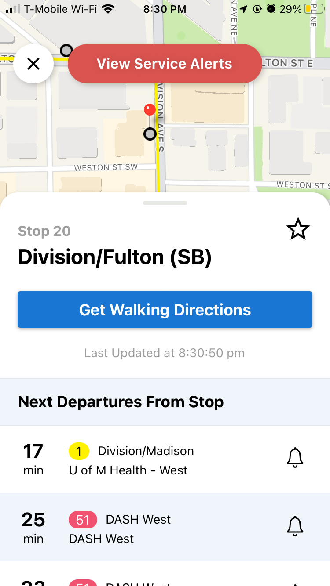
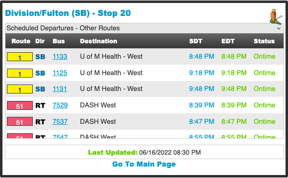

Two bus routes trace my commute very similarly.
One is the Rapid route #1, which operates in a very recognizable way: riders wait at stops along the road, where the bus arrives roughly every half hour. They scan their refillable fare card against a panel by the driver’s door before taking their seat. Riders have to pull a hanging cord to request a stop. If no one is waiting to get on at a stop, and if no one pulls the cord, the driver carries on without slowing down.
The other is the Silver Line, Michigan’s first bus rapid transit system. This means it runs more like a train: Passengers hop on and off through automatic doors with a fare card they’re supposed to validate beforehand on the designated platforms. (Occasionally there are fare enforcement officers aboard to check tickets, which I’ve written about before.) The platforms are raised, to be flush with the bus' boarding level. For a stretch of the route, no fare is required or enforced, though not the stretch I ride. The bus stops at every platform, so riders don’t request stops with a cord. For some stretches, it has a designated lane and left turn light. Most of the day, it comes every 15 minutes.
Hanging from the Silver Line’s platforms is a gold marquee sign, displaying the estimated arrival time for the next few buses, which respond as the bus runs late or early. (Regular bus routes used to post a paper schedule for that stop, with no indication of where an actual bus was, now. They’ve recently replaced even that with a QR code...)
Many mornings, I would rush to my Silver Line bus stop only to read on the marquee that it was late. In the meantime, I’d look behind me to see the #1 pass by. I started to think which route would really serve me better, or at least how they differed.
I used to take the #1 home since there was a stop mere feet from my office door, but during rush hour and in the snow, it proved too unreliable. I have to walk a few blocks to the Silver Line stop, and I often just miss one, but another comes in half the time. Besides, Google Maps and the posted schedules told me that the Silver Line was the better choice.
But I wondered, if I could plot all those true deviations from that schedule, how would the different buses, the different bussing systems, compare? And the Silver Line’s hanging displays implied that this realistic data was available.
Among the Rapid’s online schedules is a real-time bus tracker (also available through the myStop app).

Each stop also has a unique URL, updating in real time, essentially an invisible Silver Line hanging display for every other stop on every other route. (However, this tracker actually doesn’t always exactly match the SL’s hanging displays. I still haven’t figured out the exact networking between the bus, the display, and the app.)

These are the pages scraped for delay data. It was my first time writing my own web scraper! My scraper logged each bus arrival’s scheduled time and actual time. Specifically, every time a bus was scheduled to arrive, if that bus was 'Status: Late', it logged the estimated arrival time at that scheduled moment.
I scraped the pages of four locations—the Silver Line and #1 stops I could take north in the morning, and the two I could take south in the evening, and ran them from the last snowstorm through the spring. I ended up with eleven weeks of usable data, logging every late bus.
My scraper logged in a .json format, which I converted to .csv. I used Processing to draw a line for every entry. The variable I’ll discuss drawing with I call “lateness” = the difference between scheduled and actual arrivals. I took those vectors into Illustrator to play with a data “shape.” As long as I kept all the proportions consistent across the day, the schedule was intact.
This was how I exported the sketches from Processing. This is the shape I took into Illustrator even though I didn’t want to use it, since it encoded data in both length and stroke weight, which I could collapse later as I experimented. More opaque indicates more frequently late. This opacity was hard to distinguish, the length and stroke weight was redundant but distracting, and the overlapping lines took no advantage of the vertical dimension.
I almost went with this—I thought it was the prettiest. But the slope of the triangles and the way they squish towards the triangles’ peak was distracting. Also, the vertical dimension had no encoding.
Sort of a reversal of the last, trying to emphasize the actual arrival. It’s still weak in the same ways, but also a pretty shape to use for something else.
Instead of stroke width, I tried distributing the instances shifted down by their lateness. This was redundant to the line length. The endpoints always traced a straight line down, at the same angle.
Evenly spacing each instance and sorting by their lateness exposed a curve which actually indicated something. The vertical stacked up how many times the bus was late, while the horizontal length encodes the late-ness. Sort of quality and quantity. No stroke width or opacity needed. This gave me the most communicative shape in the plainest way. Rotating this and putting the times in the middle gave me a nice scrollable side-by-side comparison.
These charts show an 11-week period, meaning each stop had 55 weekday arrivals. The stop with the most late arrivals had 42, and many stops have only a few. Generally, the buses do pretty well. The Silver Line is more often late, but it has almost twice as many chances to be. It is slightly more held back during rush hours between 4pm–7pm on weekdays, but generally, the buses are much more competitive than I expected.
My sense is that stopping and opening freely at every station loses the Silver Line as much time as it saves. Additionally, the ticket scanning sensor at Silver Line platforms confuses people more than paying at the driver, and feigned for officers or not, these conversations slow the bus down. I’ve never heard the #1 bus drivers complain aloud about riders making them late, but it’s common from Silver Line drivers. Between this and the hanging schedules, the Silver Line definitely appears more efficient.
Though I’m not sure which model is more user-friendly. As a child riding the (standard system) #24, I remember having a lot of anxiety about pulling the cord at the right moment. The Silver Line announcing and stopping at every station does feel less intimidating. This and the level-boarding allowed by the raised platforms makes it much more accessible for wheelchair users.
Any of its shortcomings are surpassed by the fact that it comes twice as often. Waiting 15 minutes at a Silver Line platform (which have seats, unlike most bus stops here) feels much more manageable than half an hour. The Silver Line is not necessarily the more prompt or reliable bus, but it is the more convenient system, once a rider understands the differences. And in a city metropolitan enough to need a bus system, but too suburban for it to be comprehensive yet, the Silver Line feels aspirational. I’m excited to see what it’s trying, and I hope it develops further.